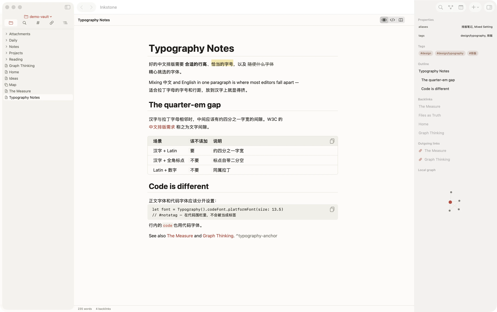

Écrire
Aperçu vivant, pas un écran scindé
Titres, gras, citations, encadrés, cases à cocher, tableaux et code se composent à mesure que vous tapez ; la syntaxe ne se montre que sur la ligne où se trouve le curseur. Le mode lecture est une vue distincte, en lecture seule. Police du texte, police du code et leurs corps se règlent séparément.
